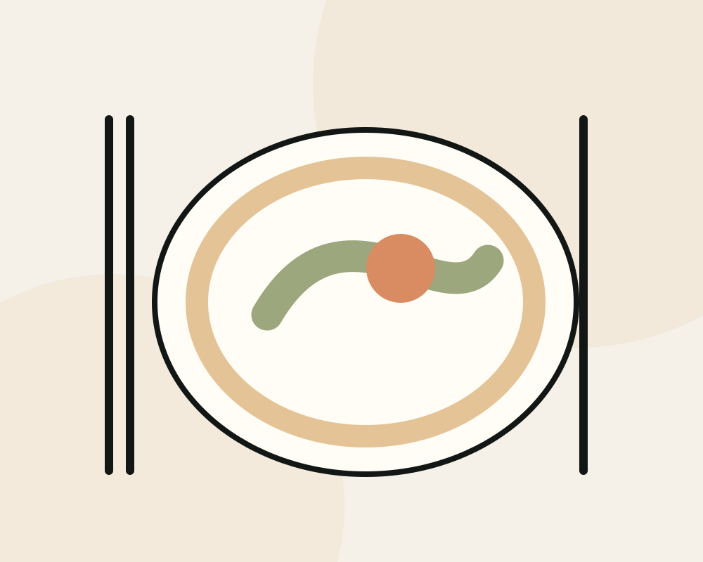

Seasonal Tasting
An evolving expression of the kitchen.
A MODERN DINING EXPERIENCE
Seasonal cooking, genuine hospitality and a table worth lingering over.
Illustrative Restaurants website concept by MyBizDigital.

THE DINING EDIT / CONCEPT 0101 / MENU
Explore how this original website concept could present relevant restaurants services or product categories. Everything here is illustrative.
An evolving expression of the kitchen.
Thoughtfully composed plates.
An intimate gathering, made personal.
Sample content for demonstration only. Actual services, prices and availability are not represented.
02 / THE EXPERIENCE
From the first welcome to the final course, the experience is in the details.
Discover our approach ↗03 / WHAT MATTERS
Different businesses need different information and interactions. This design concept is built around its own audience and goals.
An intentional design element for a clear, accessible visitor experience.
From the first welcome to the final course, the experience is in the details.
A practical digital journey without unnecessary distractions.
THE NEXT STEP
The Dining Edit is a fictional restaurant concept. Menus, hours and reservations are illustrative.